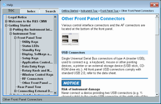
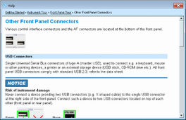
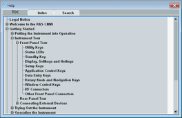

This section describes how to use the online help system as context-sensitive help.
- Press the HELP key on the instrument, to the left of the display.
- Press the HELP key on the soft-front panel in single-window mode.
- Press
 on the soft-front panel in multiple-window mode.
on the soft-front panel in multiple-window mode. - Right-click a screen element and select "Help".
- Press F1 on a connected keyboard.
The online help is context-sensitive. It opens at a position that is related to the currently displayed view, tab or dialog. You get better results if you select the relevant screen object before you open the help. If you want for example information about a specific tab, tap into that tab before you open the help.
The help dialog box is divided into two parts. The right part displays the help contents (contents pane). The left part provides tabs for navigation within the help system (navigation pane with "TOC" tab, "Index" tab and "Search" tab).
The "TOC" tab lists the table of contents as a dynamic tree.
| ► | Select a tree entry to display the topic in the contents pane. |
The "Index" tab lists all index entries.
Type text into the field at the top and press ENTER to show only index entries starting with this text.
Select an index entry to display the topic in the contents pane.
The "Search" tab provides a full-text search function.
Enter a search string and press ENTER to start the search.
A list of results is displayed.
Select a result entry to display the topic in the contents pane.
The following softkeys are available on the right.
Toolbar button | Action |
|---|---|
Go to the start page | |
Browse the topics you visited before | |
Increase or decrease the text size | |
Show the navigation pane and the contents pane  | |
Hide the navigation pane / show only the contents pane, for example to display large images or tables  | |
Show only the navigation pane / hide the contents pane, for example to display long topic titles in the navigation tree  |